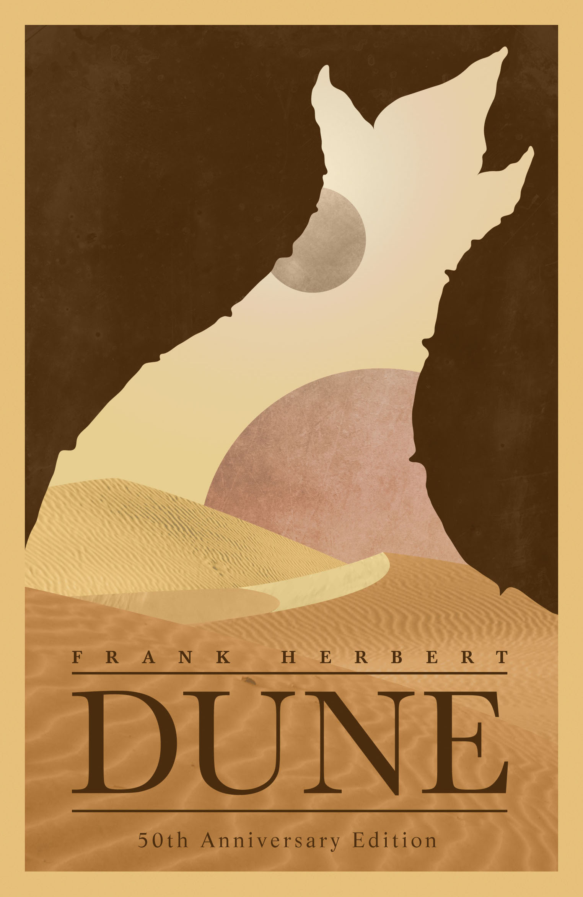

Dune is the story of boy named Paul who must face hardship and defeat in order to become the chosen one and defeat the evil baron. He must befriend the people of the planet Arrakis and teach them how to fight an enemy who has the advantage.
The first half of the novel tells how Paul and his family are betrayed leaving his family dead and him essentialy stranded on a barren and hostile planet. The second half of the book, is Paul training and eventualy seeking revenge agaisnt his family's killers.
 About the author